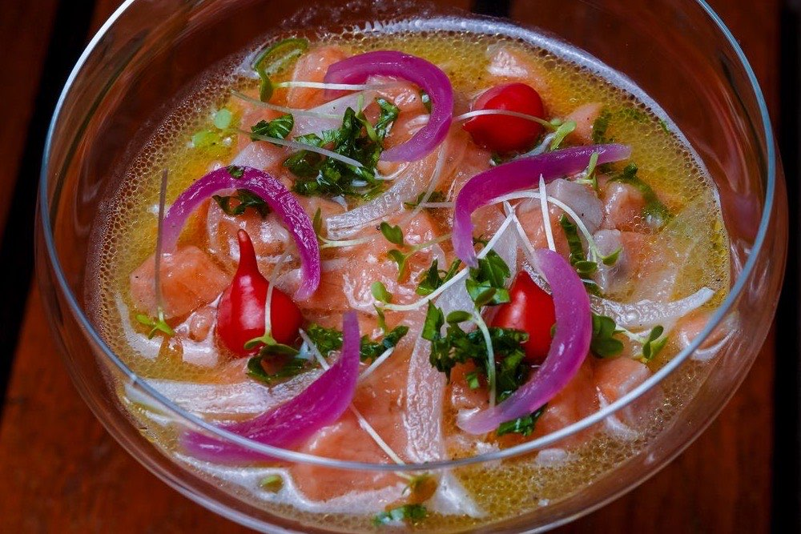
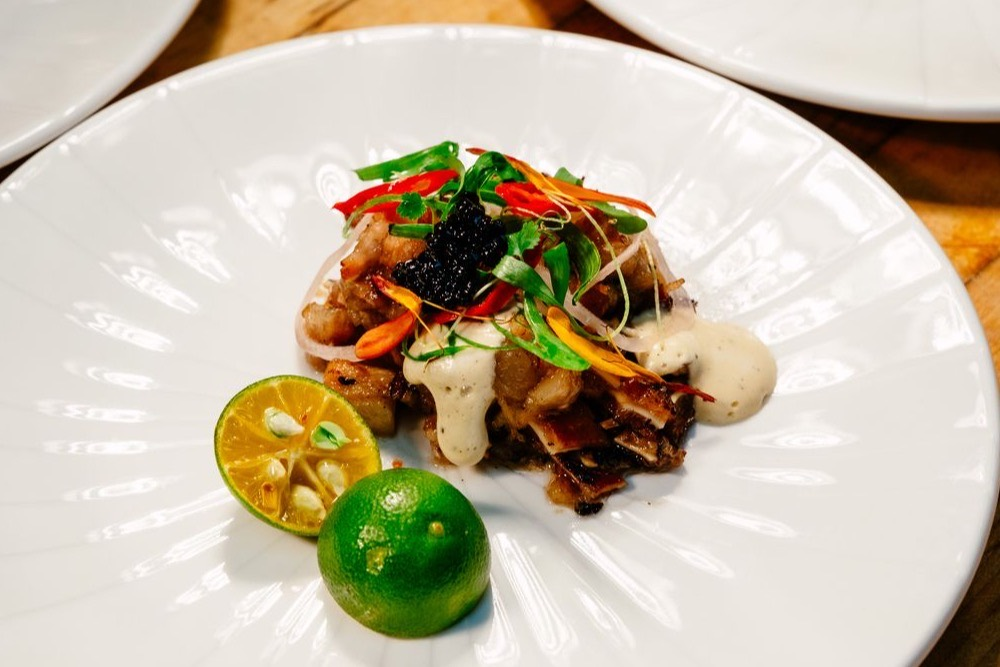
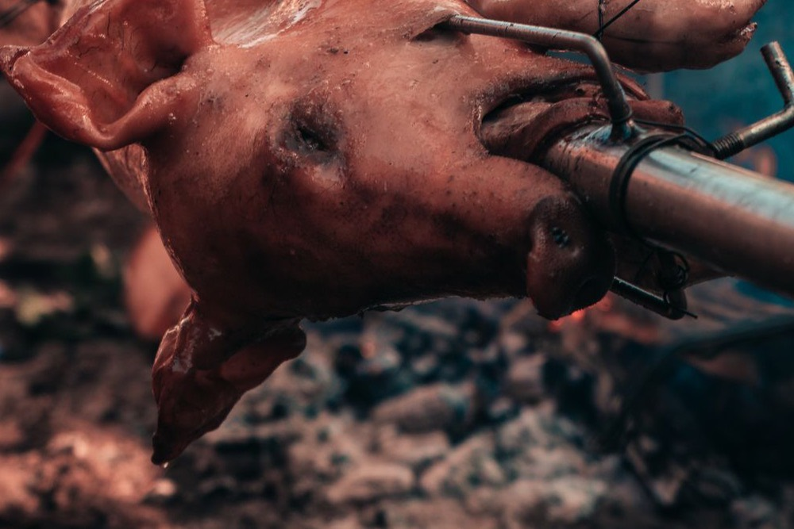
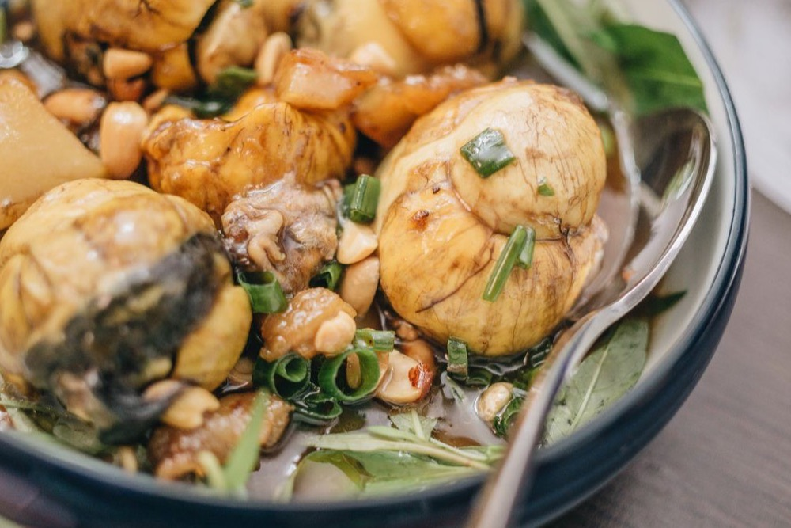
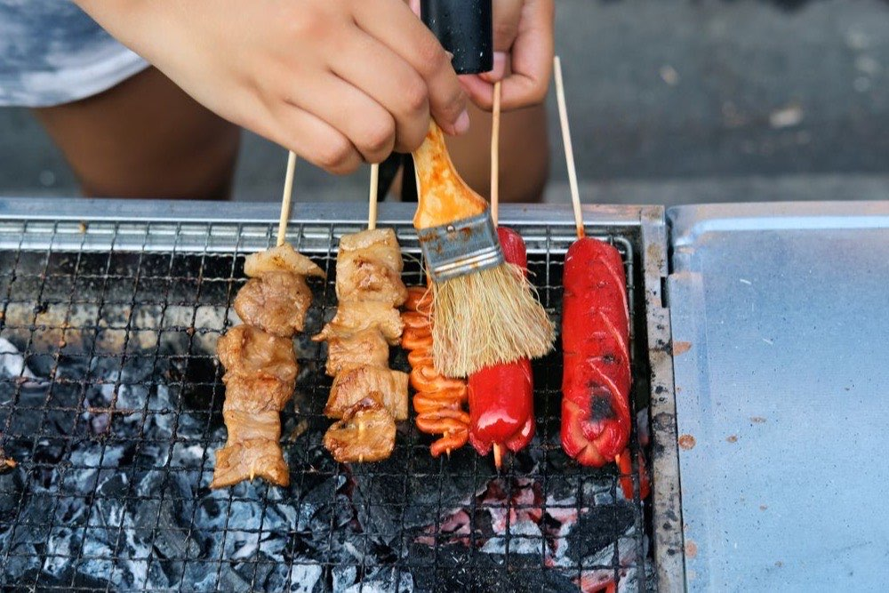
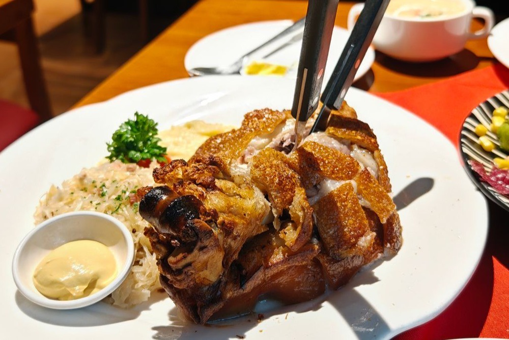
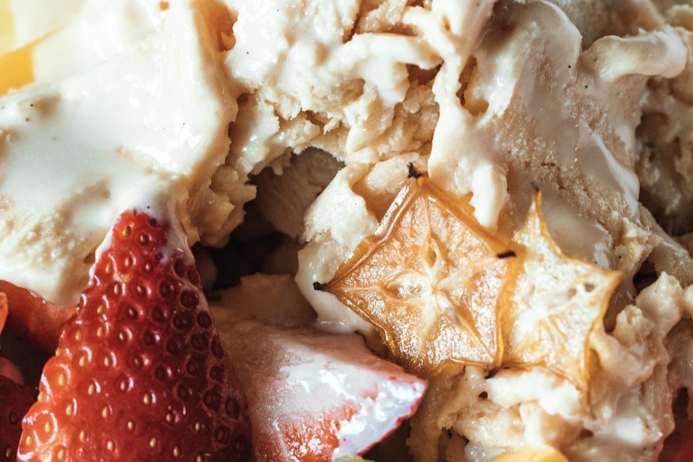
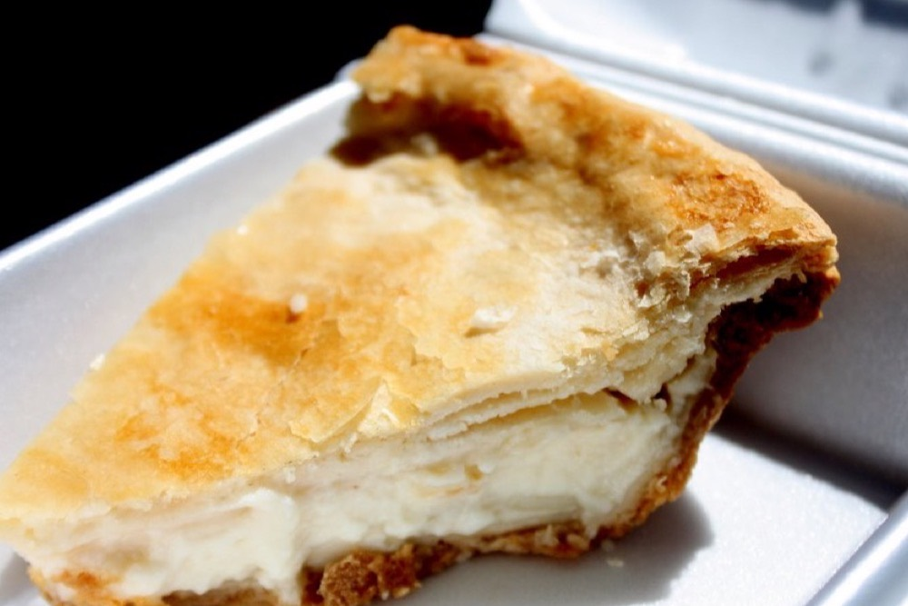

Filipino Food Guide
Use this directory to recognize sixteen dishes and decide what to check before ordering or cooking. Ingredient lists can differ between households, restaurants and brands. Food labels and the complete recipe matter more than a dish name when checking allergies or dietary needs.
The personality links are our entertainment pairings. They do not predict food preferences or establish a dish’s cultural meaning. The photographs are illustrative; see photo credits.
Gamitin ang direktoryo para kilalanin ang labing-anim na putahe at malaman ang susuriin bago mag-order o magluto. Nagkakaiba ang sangkap ng pamilya, restaurant at brand. Mas mahalaga ang label at buong recipe kaysa pangalan sa allergy at pangangailangan sa pagkain.
Pares na pang-aliw ang personality links. Hindi nito hinuhulaan ang hilig o itinatakda ang kahulugan ng pagkain. Pantukoy ang mga larawan; tingnan ang photo credits.
Adobo

Meat simmered with vinegar, garlic and seasonings; our chicken version also uses soy sauce. Compare a saucy finish with a reduced coating before choosing your recipe.
Check before choosing: Check soy sauce ingredients and the meat cut.
Karneng niluto sa suka, bawang at pampalasa; may toyo ang chicken version namin. Pumili kung gusto mo ng maraming sarsa o malapot na balot.
Suriin bago pumili: Suriin ang sangkap ng toyo at hiwa ng karne.
Sinigang

A sour soup with meat or seafood and vegetables. The souring ingredient can vary; powder, paste and whole fruit need different amounts and preparation.
Check before choosing: Ask about fish sauce and what souring ingredient is used.
Maasim na sabaw na may karne o seafood at gulay. Magkaiba ang dami at paghahanda ng pulbos, paste at buong prutas.
Suriin bago pumili: Itanong kung may patis at anong pampaasim ang ginamit.
Kare-Kare

A stew with a peanut-based sauce and vegetables, often served with bagoong on the side. Our recipe uses oxtail and separates its long tenderizing stage from the sauce.
Check before choosing: Check peanuts and whether the accompanying paste contains shrimp or fish.
Nilagang ulam na may sarsang mani at gulay, na maaaring may bagoong sa tabi. Oxtail ang gamit sa recipe namin at hiwalay ang pagpapalambot at paggawa ng sarsa.
Suriin bago pumili: Suriin ang mani at kung may hipon o isda ang kasamang bagoong.
Kinilaw

A raw-fish preparation dressed with vinegar or citrus and aromatics. Acid changes the texture; it is not heat cooking and does not guarantee food safety.
Check before choosing: This remains raw seafood. The FDA advises higher-risk groups to avoid raw or undercooked seafood; see the safety source below.
Hilaw na isdang may suka o citrus at pampalasa. Binabago ng acid ang texture; hindi ito pagluluto sa init o garantiya ng kaligtasan.
Suriin bago pumili: Hilaw na seafood pa rin ito. Payo ng FDA sa mas nanganganib na grupo na iwasan ang hilaw o kulang sa lutong seafood; tingnan ang sanggunian sa ibaba.
Sisig

A chopped savory dish with many meat and seasoning variations. A sizzling presentation tells you how it is served, not a complete ingredient list.
Check before choosing: Ask about the meat, eggs, mayonnaise and other additions.
Tinadtad na malinamnam na putahe na may iba’t ibang karne at timpla. Hindi ibinibigay ng sizzling na paghahain ang buong sangkap.
Suriin bago pumili: Itanong ang karne, itlog, mayonnaise at ibang dagdag.
Lechon

Roasted pig served in portions or as a whole animal for a gathering. Cooking method, seasoning and accompanying sauces differ between preparations.
Check before choosing: Check the portion, sauce ingredients and how it is held before serving.
Inihaw na baboy na maaaring ihain nang bahagi o buo sa salu-salo. Nagkakaiba ang paraan, timpla at kasamang sarsa.
Suriin bago pumili: Suriin ang serving, sangkap ng sarsa at paghawak bago ihain.
Balut

A boiled developing duck egg eaten from the shell. It can be served with salt or vinegar. This directory makes no claims about aphrodisiac or medicinal effects.
Check before choosing: It contains egg. Ask about the preparation and choose another snack if it does not suit you.
Pinakuluang itlog ng pato na may nabubuong sisiw. Maaaring may asin o suka. Walang pahayag dito tungkol sa epekto bilang aphrodisiac o gamot.
Suriin bago pumili: May itlog ito. Itanong ang paghahanda at pumili ng iba kung hindi angkop sa iyo.
Isaw

Chicken or pork intestines cooked on skewers, often grilled. The animal, marinade and dipping sauce are details to ask about rather than assume.
Check before choosing: Keep cooked food separate from raw ingredients and ask about sauces.
Bituka ng manok o baboy na iniluluto sa tusok, karaniwang iniihaw. Itanong ang hayop, marinade at sawsawan sa halip na hulaan.
Suriin bago pumili: Ihiwalay ang luto sa hilaw at itanong ang sangkap ng sawsawan.
Crispy Pata

Pork leg prepared for a crisp skin and tender interior. It is a different dish from lechon; a crisp exterior alone does not establish safe cooking inside.
Check before choosing: Check sauce ingredients and how large a portion is intended to be shared.
Binti ng baboy na may malutong na balat at malambot na laman. Iba ito sa lechon; hindi sapat ang malutong na labas para patunayan ang pagkakaluto sa loob.
Suriin bago pumili: Suriin ang sangkap ng sarsa at dami ng pagbabahagi.
Lumpia

Rolled wrappers with a filling; recipes may use meat, vegetables or other ingredients. Our guide is for fried pork lumpiang Shanghai, not every lumpia style.
Check before choosing: Check the filling, wrapper, egg and frying oil or shared equipment.
Binalot na palaman na maaaring karne, gulay o ibang sangkap. Para sa pritong pork lumpiang Shanghai ang gabay namin, hindi lahat ng estilo.
Suriin bago pumili: Suriin ang palaman, wrapper, itlog, mantika at pinagsasaluhang kagamitan.
Taho

Silken tofu with arnibal (sugar syrup) and pearls. The softness of the tofu and amount of syrup change the eating experience.
Check before choosing: Check soy and toppings; ask for syrup separately if you prefer to choose the amount.
Silken tofu na may arnibal at pearls. Nakaaapekto sa pagkain ang lambot ng tofu at dami ng syrup.
Suriin bago pumili: Suriin ang soy at topping; ihiwalay ang arnibal kung gusto mong pumili ng dami.
Pancit Canton

A stir-fried noodle dish with vegetables and optional meat or seafood. Our recipe uses dried canton noodles; package directions help determine the liquid and cooking time.
Check before choosing: Check wheat, soy, oyster sauce, broth and chosen proteins.
Pansit na may gulay at opsyonal na karne o seafood. Dried canton noodles ang gamit namin; sundin ang pakete para sa likido at oras.
Suriin bago pumili: Suriin ang trigo, soy, oyster sauce, sabaw at napiling karne o seafood.
Champorado

Chocolate rice porridge. Our version uses glutinous rice, with cocoa or tablea options and milk served separately. Sweetness depends partly on the chocolate you buy.
Check before choosing: Check whether tablea is sweetened and whether toppings contain milk or fish.
Tsokolateng lugaw. Malagkit ang gamit namin, may cocoa o tablea at hiwalay na gatas. Nakaaapekto sa tamis ang nabili mong chocolate.
Suriin bago pumili: Suriin kung matamis na ang tablea at kung may gatas o isda ang topping.
Halo-Halo

A mixed dessert with shaved ice and a changing selection of sweet components and toppings. Two bowls can have different ingredients even with the same name.
Check before choosing: Ask about milk, eggs, nuts and individual toppings rather than assuming a fixed recipe.
Dessert na may shaved ice at iba’t ibang matamis na sangkap at topping. Maaaring magkaiba ang laman ng dalawang bowl na parehong halo-halo.
Suriin bago pumili: Itanong ang gatas, itlog, mani at bawat topping; hindi iisa ang recipe.
Buko Pie

A pastry filled with young coconut. Crust, thickening ingredients and sweetness vary, so use the actual label or recipe when checking dietary suitability.
Check before choosing: Check wheat, milk and eggs in the crust and filling.
Pie na may palamang buko. Nagkakaiba ang crust, pampalapot at tamis kaya suriin ang aktuwal na label o recipe.
Suriin bago pumili: Suriin ang trigo, gatas at itlog sa crust at palaman.
Kapeng Barako
A Filipino coffee name associated with a strong cup. Brewing strength, serving size and additions affect what you actually drink.
Check before choosing: Check whether milk or sweeteners are already added; the quiz is not a caffeine recommendation.
Pangalang Filipino sa kape na kaugnay ng matapang na timpla. Nakaaapekto ang brewing, laki ng serving at dagdag sa aktuwal na iniinom.
Suriin bago pumili: Suriin kung may gatas o pampatamis na; hindi payo sa caffeine ang quiz.
Sources for preparation examples
- Vanjo Merano, Panlasang Pinoy — Chicken Adobo
- Vanjo Merano, Panlasang Pinoy — Sinigang na Baboy with Gabi
- Lalaine Manalo, Kawaling Pinoy — Taho
- FDA — Selecting and Serving Fresh and Frozen Seafood Safely
All six recipe guides include their preparation and safety sources.